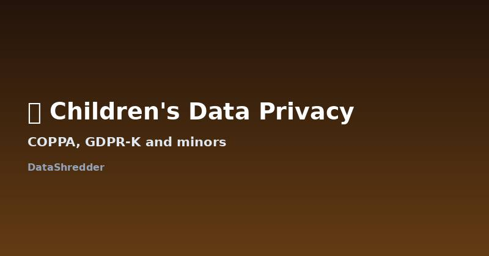

Children's Data Privacy: COPPA, GDPR-K, and Deleting a Minor's Data
Updated August 2026 · 9 min read

Why children's data gets special treatment
Both US and EU privacy law treat children's personal data as higher-risk than adults', on the reasoning that minors can't meaningfully consent to data collection the way an adult can. This translates into stricter collection rules upfront, and in most cases, an easier path to deletion — a parent doesn't need to prove the same kind of harm or justification an adult typically would.
COPPA, in the United States
The Children's Online Privacy Protection Act applies to services that knowingly collect data from children under 13. Under COPPA, a parent can review what's been collected and request its deletion directly, and the operator is required to comply without the extended legal exceptions that apply to adult data. If a service collected data from a child under 13 without verifiable parental consent in the first place, that's a separate violation worth reporting to the FTC alongside your deletion request.
What COPPA looks like in practice
Apps and websites that are "directed to children" (games, educational tools, video platforms with clear kid-focused branding) are required to get verifiable parental consent before collecting anything — typically through a credit card verification, signed consent form, or video call confirmation. If you find that a service collected your child's data without ever going through this step, that itself is grounds for both a deletion request and a formal FTC complaint. General-audience apps that unknowingly collected data from a child under 13 are still required to delete it once you notify them, even if the app wasn't originally designed for kids.
GDPR-K, in the European Union
GDPR doesn't have a separate statute for children, but Article 8 sets the age of consent for data processing at 16 by default. Data collected from a child without valid parental consent under this threshold is, by definition, unlawfully processed — which strengthens an erasure request significantly, since "unlawful processing" is one of the clearest grounds for erasure under Article 17.
Age thresholds vary by EU country
| Country | Age of digital consent |
|---|---|
| Germany, France, Netherlands | 16 (EU default) |
| UK (post-Brexit, UK GDPR) | 13 |
| Spain, Portugal | 13–14 (varies) |
| Ireland | 16 |
Because member states can set the threshold anywhere between 13 and 16, the exact age that matters depends on which country's law applies to the specific service — usually where the child was located when the data was collected.
A special case: school and educational apps
Apps used through a school often collect data under the school's consent rather than a parent's individual signup — the school acts as the parent's agent for COPPA purposes in the US, for instance. This means a deletion request for education-related data sometimes needs to go through the school district rather than directly to the app, especially for platform-wide student data systems. If you're unsure who to contact, starting with the school's designated data privacy officer is usually faster than contacting the app vendor directly.
Making a request as a parent or guardian
- State clearly that you are the parent or legal guardian and include the child's approximate age or date of birth at the time data was collected.
- Cite COPPA if the service is US-based, or GDPR Article 8 alongside Article 17 if it's EU-facing.
- Ask specifically whether the service verified parental consent at signup — this is often the weakest point in a company's compliance and the fastest route to a deletion.
Our free request generator can build this kind of request, worded appropriately for a parent acting on a child's behalf.
Frequently Asked Questions
What age counts as a 'child' under these laws?
Under COPPA it's under 13. Under GDPR the default is under 16, though individual EU countries can set it as low as 13.
Can a parent request deletion without the child's involvement?
Yes — both frameworks are built around parental or guardian consent and control, so a parent can request deletion directly.
What if the child is now an adult?
They can request deletion themselves as any adult would, citing the same rights covered in our other privacy law guides.
Who do I contact for data collected through a school app?
Often the school district's data privacy officer rather than the app vendor directly, since many educational platforms operate under the school's consent rather than an individual parent signup.